/* signe-pierce - proofs */
12 plates. Deterministic overlays rendered by the composition-analysis skill.
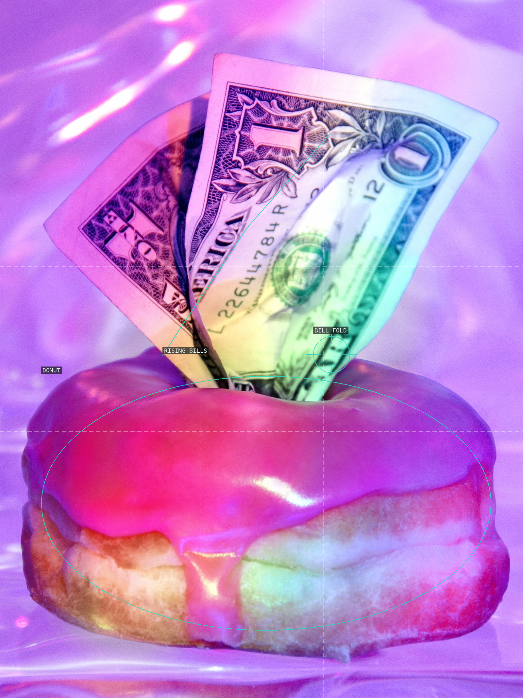
01-cheap-thrills
A glossy donut gives the upward-fanning bills a deliberately theatrical pedestal.
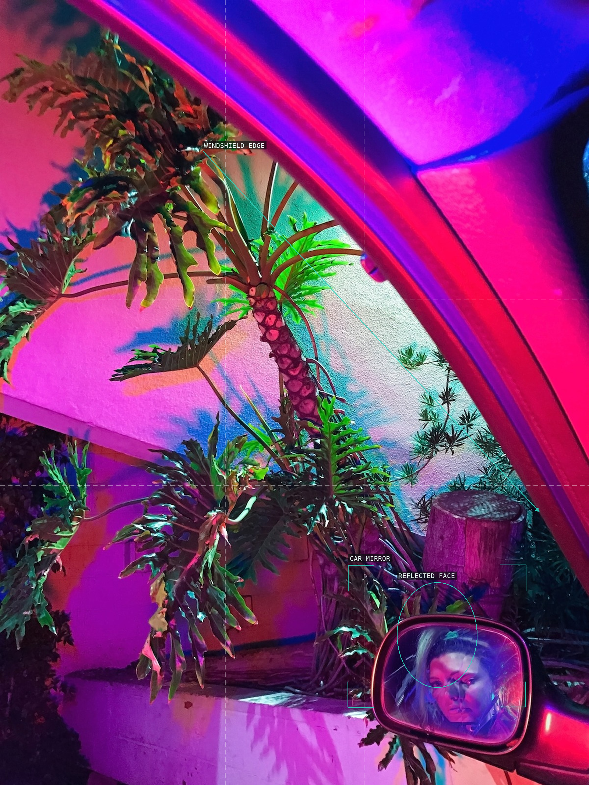
02-mirrorgaze
The car mirror creates a small portrait aperture inside an aggressively diagonal vehicle frame.
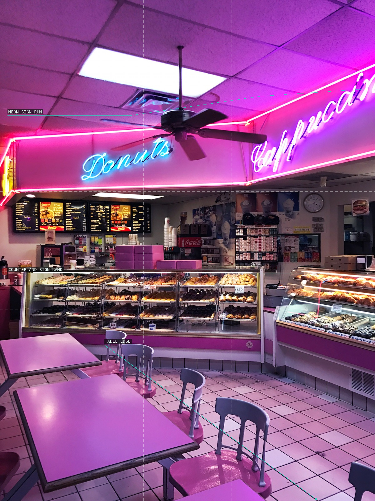
03-3am-donut-shop
Tables recede toward a continuous neon band, making the shop both empty and insistently staged.
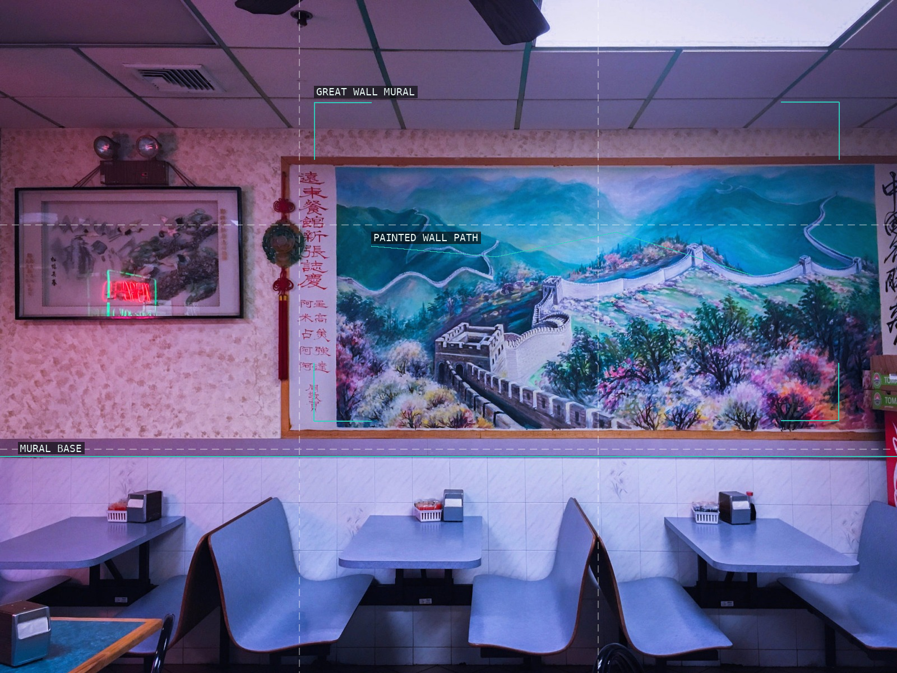
04-chinese-takeout-ii
A panoramic mural supplies a second landscape above the dining room's quiet seating rhythm.
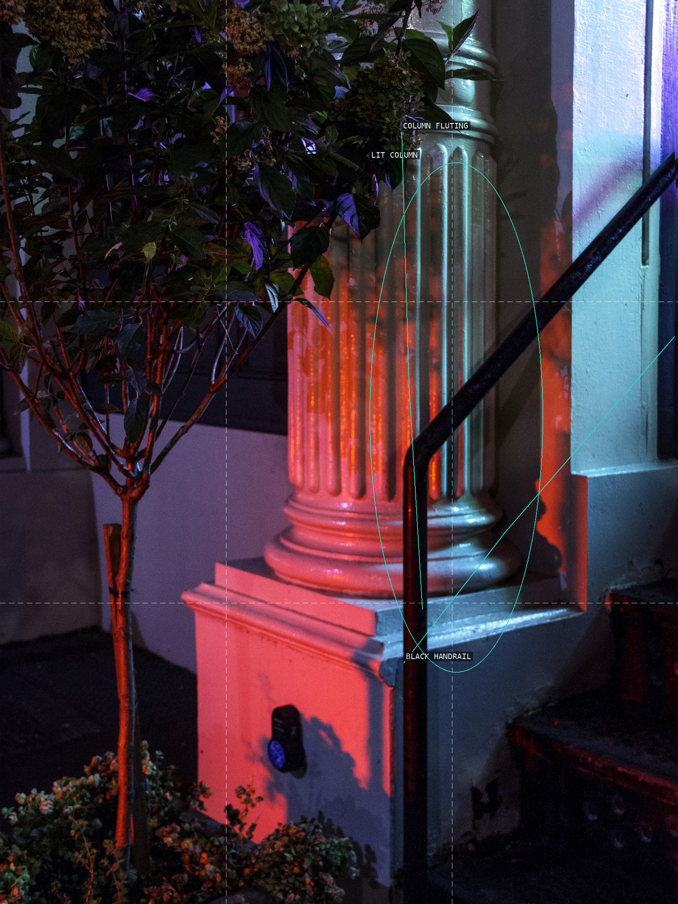
05-column-rail
The dark handrail cuts through the column's vertical mass and turns the threshold into a collision of directions.
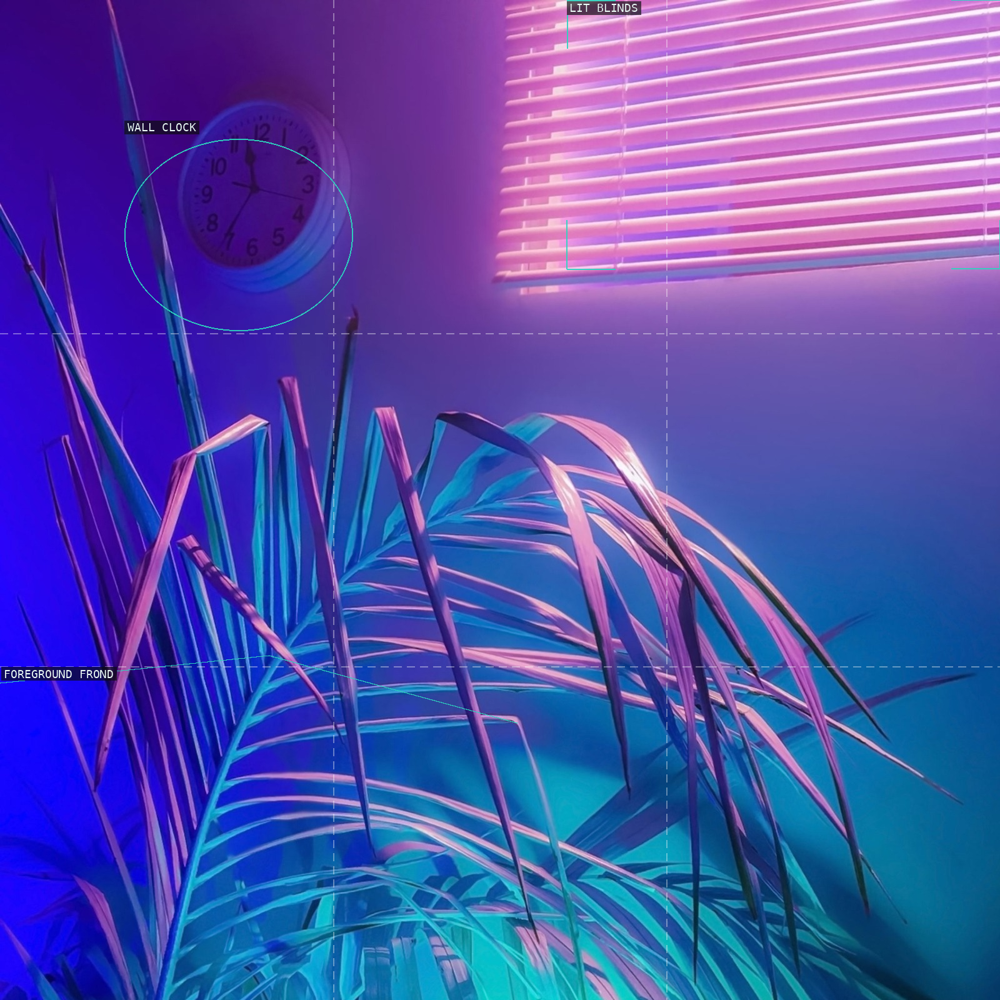
06-heightened-realism
A foreground plant obscures an empty, blinds-lit interior and makes depth feel constructed rather than neutral.
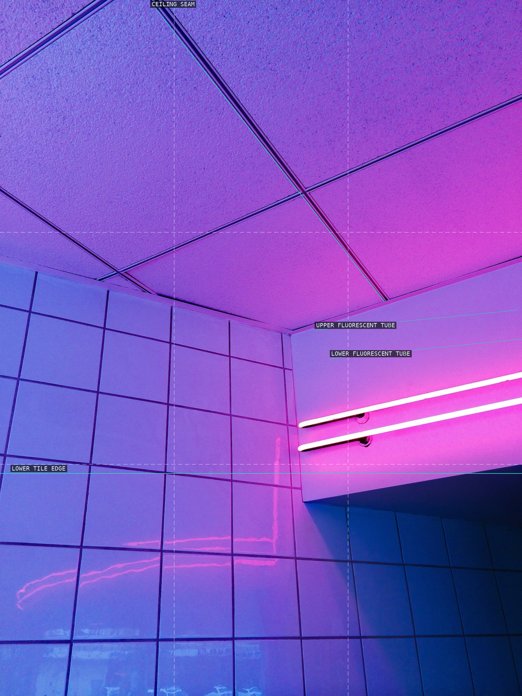
07-hyperspace
Tilted ceiling panels and parallel fluorescent tubes convert a tiled corner into a chromatic diagram.
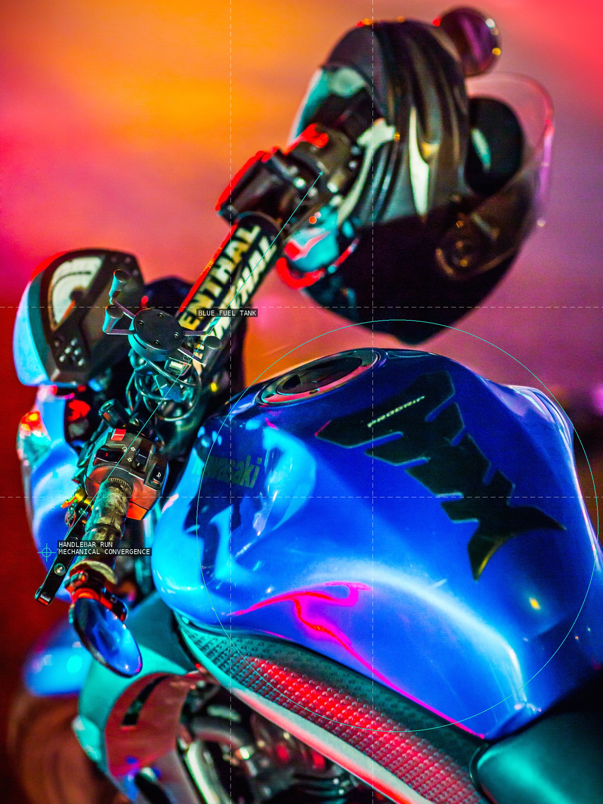
08-kawasaki-angel
The fuel tank is a large blue anchor while handlebars thrust the eye upward through the close mechanical view.
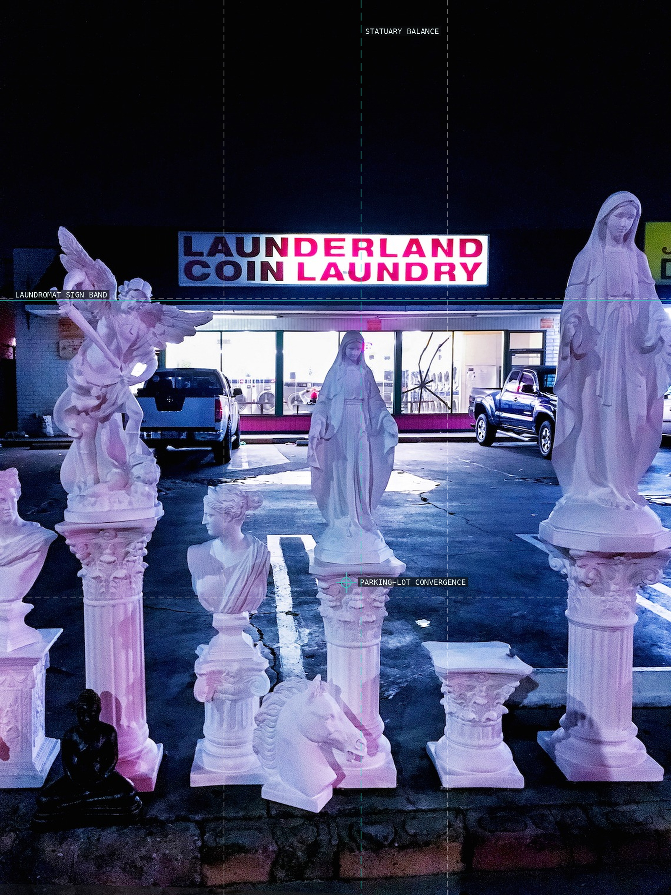
09-strip-mall-of-the-gods
Statuary becomes a foreground proscenium around the commercial sign and receding asphalt.
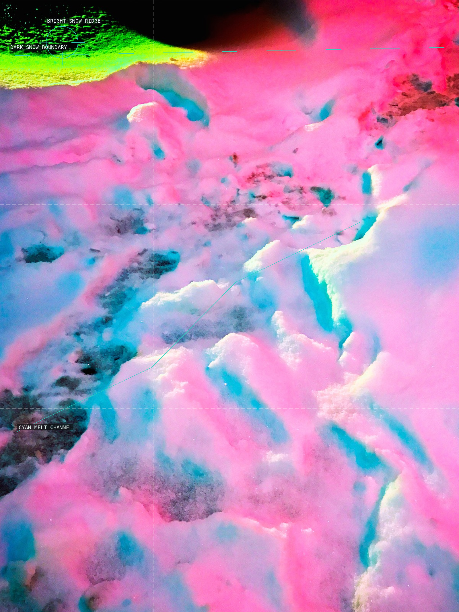
10-neon-snow-i
Pinks, cyan melt channels, and granular snow suppress ordinary scale into an all-over luminous surface.
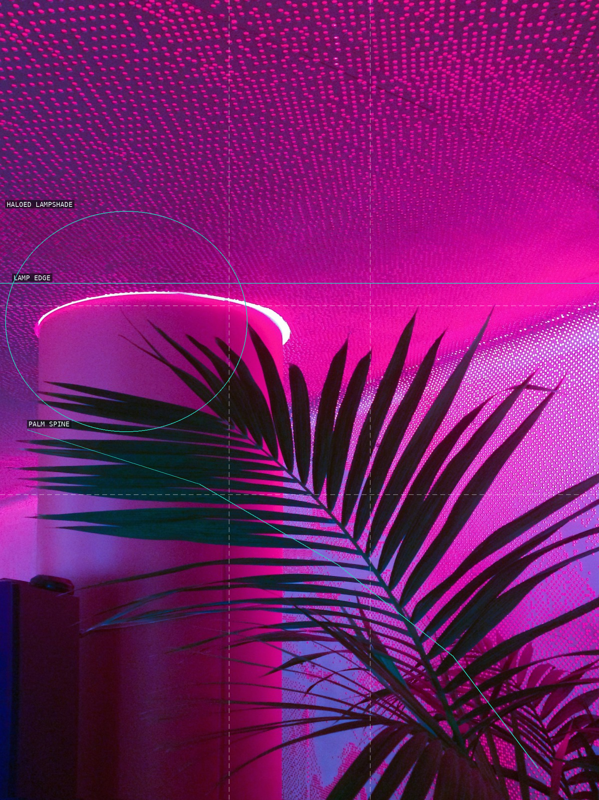
11-neon-palm
A silhouetted palm spine slices through the dotted pink field and a lamp's hard halo.
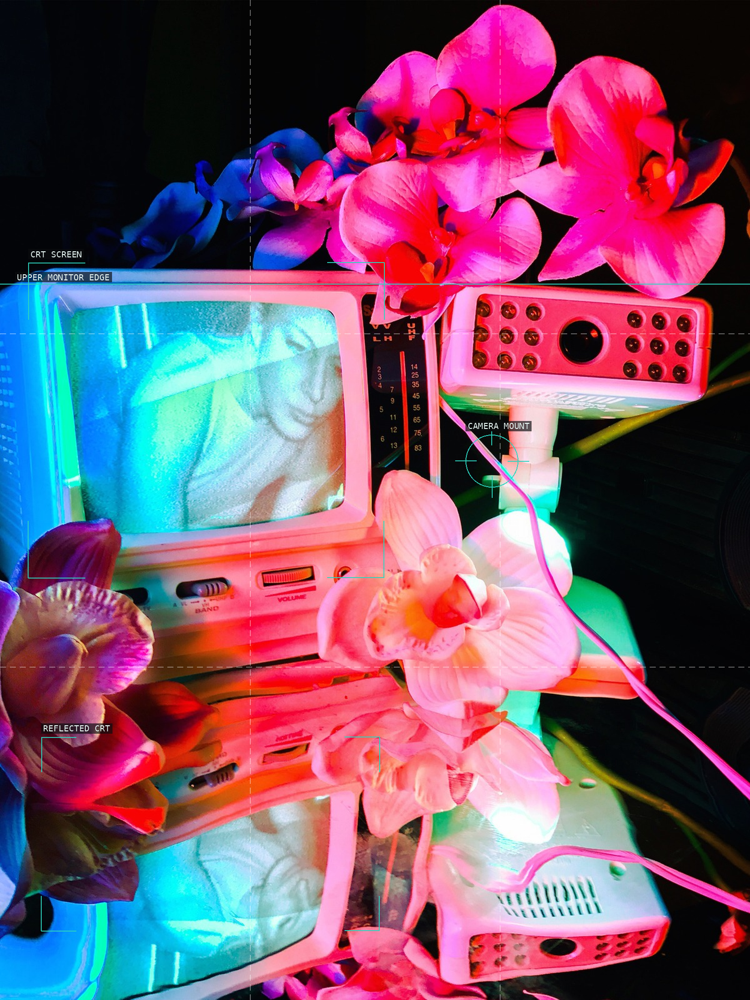
12-self-parallaxxx
Screens, reflection, flowers, and a camera make a dense apparatus of recursive looking.